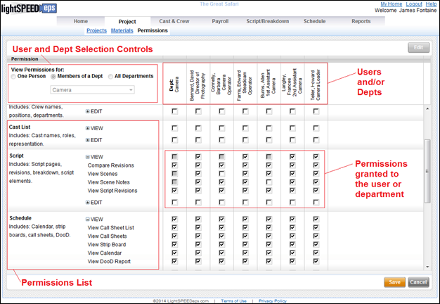
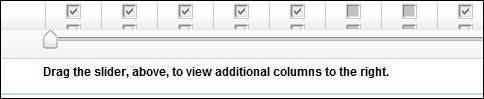

The Permissions screen allows you to view and modify the permissions that each person or department has within Lightspeed.
Permissions Screen

The Permissions List, visible along the left side of the screen, is divided into categories such as Script and Schedule. Each category of permissions is further divided into View and Edit subcategories which contain individual permissions.
Click on the plus sign [+] next to each View or Edit subcategory to view the individual permissions.
Note: Financial Permissions are only accessible to users holding the role of Financial Data Administrator.
Use the controls in the top left
corner of the screen to select a person or department. You may choose either one person, all people
in a department, or a list of all departments.
After you have made your selection,
the list of the people and/or departments you've selected is displayed.
If the number of columns cannot
fit onscreen at once, then a horizontal slider appears at the bottom of the
screen. Use this slider to scroll
through the columns.
Column Slider

Below each person or department
name is a list of checkboxes. The
checkboxes represent which permissions have been granted to the person or
department.
Each checkbox can display one of
three statuses:
·
Checked:
The permission has been granted to the person or dept.
·
Unchecked:
The permission has not been granted to the person or dept.
·
Partially Checked: The checkbox represents a collection of permissions which
have been partially granted.
Permissions
may have a status of partially granted in the following situations:
1.
The checkbox
represents a department permission and some people in the department have the
permission and other people do not.
For
example, if there are six people in the Camera department and only four of them
have been granted View Scene Notes
then a partial checkbox will be displayed under the Camera department for the
permission View Scene Notes.
2.
The checkbox
represents a category of permissions and the person or department has been
granted some of the underlying permissions within the category.
For
example, if within the permissions category Script, [+]View a person has permission to View Scenes but not
permission to View Scene Notes, then their checkbox for Script, [+]View will display a partial status.
Note: If a person
holds multiple occupations on a production then Lightspeed displays separate
permissions per occupation. Separate
permissions per occupation allows you to grant permissions to a specific
occupation which can later be rescinded if the crew member no longer holds the
occupation.
When a person has multiple
occupations within a production their overall permissions are a combination of
each occupation's permissions.
You may change the permissions
assigned to a person or department using the permissions screen. Use the following steps to edit permissions:
1.
Select the person or
department you wish to modify using the selection controls in the upper left
section of the screen.
2.
Scroll down, viewing
the list of permissions on the far left, to locate the permission or
permissions you wish to modify.
3.
Click on the Edit button in the upper right.
4.
Using the applicable
checkboxes, add or remove permissions.
Be aware
that when you change permissions for an entire department, those changes are
applied to everyone in the department.
5.
Click on the Save button in the lower right to save
your changes.
Related Topics